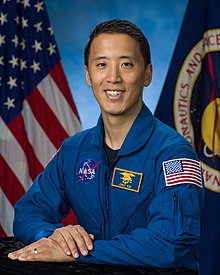
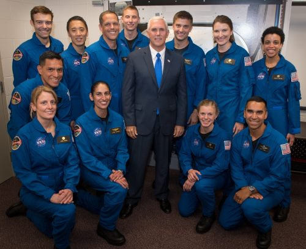

Jonny Kim

Multi-Faceted Professional
Jonny Kim is both an astronaut, Navy Seal, and a physician.
Education
- BA University of San Diego, 2012
- MD Harvard Medical School, 2016
Kim first graduated in summa cum laude from University of San Diego with a Bachelor of Arts in Mathematics.He continued his education at Harvard Medical School, graduating with a Doctor of Medicine in 2016.
Experience
- United States Navy
- NASA Astronaut Group 22
- Brigham Young University
Naval Career

Jonny Kim started his Naval career in 2002, where he was assigned to SEAL Team 3 as a Special Warfare
Operator. He was in over 100 combat missions and deployed twice. Kim commissioned to be an officer
in 2009, and continued on to the Medical Corps once he graduated.
NASA
Kim applied for Astronaut Canidacy and was accepted June 7, 2017. He was only one of 12 chosed from over 18,000 applicants. He successfully graduated from training in January 2020. Kim will be going to the moon in 2024.
Physician
Kim successfully completed his medical internship at Massachusetts General Hospital and Brigham and Women's Hospital in emergency medicin.